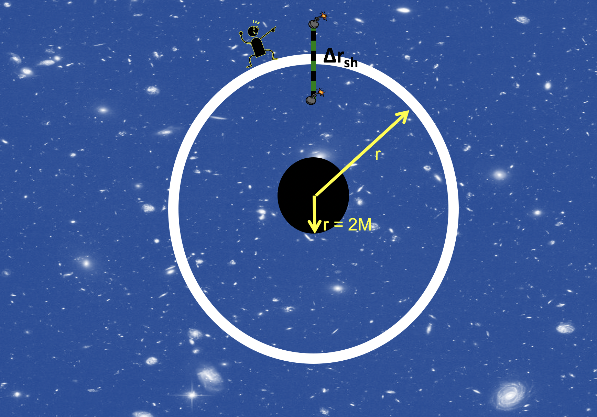

Forrige side🙂 🙁3 observatørerPADLET

$$\Delta r_\mathrm{sh}=\frac{\Delta r}{\sqrt{\sst}}$$ Ser du at igjen så er det faktoren $\sqrt{\sst}$ som kommer inn, akkurat som γ i spesiell relativitetsteori? Hvor lang vil langt-vekkobservatøren observere at staven er ettersom skallet kommer nærmere og nærmere hendelsehorisonten?